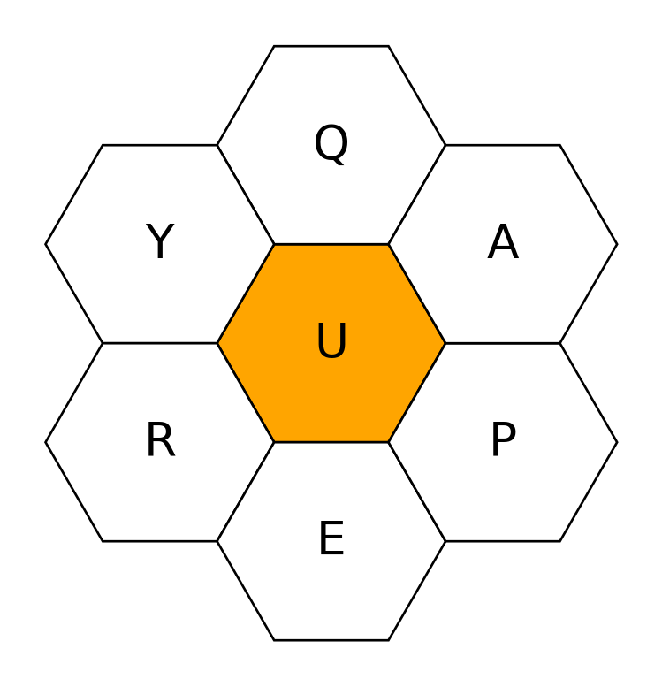

All the previous posts on this blog have been in R. But sometimes I want to program in another language – Python, Scala, etc. So in the process of setting up and testing Python with Quarto, I decided to write this test post where I implement a set of simple functions to solve the word blossom / spelling bee1 game given a set of letters along with some constraints (min / max / total word length, etc).
1 Twenty years of being familiar with this game and I never knew what it was called until I looked it up for this post. I could only find “word blossom” while Googling, but a friend I sent this to mentioned that it’s called spelling bee. Which makes sense since it looks like a honeycomb.
Before proceeding, let’s load some packages.
The variants I’ve encountered online – this, this, or this – consist of a sequence of 6 letters arranged around a central letter.
def generate_letters(seed: int, nchar: int = 7) -> List[str]:
random.seed(seed)
central_letter = random.choice(["A", "E", "I", "O", "U"])
alphabet = string.ascii_uppercase.replace(central_letter, "")
non_central_letters = random.sample(population=alphabet, k=nchar-1)
return [central_letter] + non_central_letters
letters = generate_letters(seed=95)
print(letters)['U', 'Q', 'Y', 'R', 'E', 'P', 'A']Visually, it looks something like this (using a modified version of code from this stackexchange post)2
2 Not having written any Python for more than a year, I’d forgotten how much fun it was to customize matplotlib plots.
Code
def plot_word_blossom(letters: List[str]) -> None:
coord = [[0,0,0],[0,1,-1],[-1,1,0],[-1,0,1],[0,-1,1],[1,-1,0],[1,0,-1]]
colors = [["orange"]] + [["white"]] * 6
labels = [[l] for l in letters]
# Horizontal cartesian coords
hcoord = [c[0] for c in coord]
# Vertical cartersian coords
vcoord = [2. * np.sin(np.radians(60)) * (c[1] - c[2]) /3. for c in coord]
fig, ax = plt.subplots(1)
ax.set_aspect("equal")
# Add some coloured hexagons
for x, y, c, l in zip(hcoord, vcoord, colors, labels):
color = c[0]
hex = RegularPolygon((x, y), numVertices=6, radius=2. / 3.,
orientation=np.radians(30),
facecolor=color, alpha=1, edgecolor='k')
ax.add_patch(hex)
# Also add a text label
ax.text(x, y, l[0], ha="center", va="center", size=20)
# Also add scatter points in hexagon centres
# setting alpha = 0 to not show the points
ax.scatter(hcoord, vcoord, c=[c[0].lower() for c in colors], alpha=0)
plt.axis("off")
plt.show();
plot_word_blossom(letters)
The goal is to make as many words as possible that meet the following conditions
each word must be an actual word (say present in a British English dictionary)
word length between 4-7
each word must contain the central letter
The version I used to play as a kid had the additional constraint that each letter could be used only once.
To solve this, I load a dictionary (obtained from here) and just look up words that match the requirements.
def get_list_of_eligible_words(min_length: int = 4,
max_length: int = 7,
no_duplicates: bool = True) -> List[str]:
with open("words_dictionary.json") as f:
words_dict = json.load(f)
words = list(words_dict.keys())
n_all = len(words)
if no_duplicates:
# keep words with no duplicate characters,
# e.g., set turns 'coop' into {'c', 'o', 'p'}
words = [w for w in words if len(w) == len(set(w))]
words = [w for w in words if len(w) >= min_length and len(w) <= max_length]
print(f"Found {len(words):,} words out of {n_all:,} that meet the criteria.")
return words
words = get_list_of_eligible_words()Found 43,239 words out of 370,101 that meet the criteria.This next function takes the list of dictionary words and filters the subset of words that match the criteria.
def get_words(words: List[str], letters: List[str]) -> List[str]:
central_letter = letters[0].lower()
letters_set = set([l.lower() for l in letters])
result = sorted([word for word in words if set(word.lower()).issubset(letters_set) and central_letter in word.lower()])
print(f"Found {len(result)} words for the given letters {letters!r} with {central_letter!r} as the central letter.")
return result
print(get_words(words=words, letters=letters), sep=",")Found 21 words for the given letters ['U', 'Q', 'Y', 'R', 'E', 'P', 'A'] with 'u' as the central letter.
['aperu', 'paque', 'pareu', 'perau', 'peru', 'prau', 'prue', 'pure', 'purey', 'puya', 'quae', 'quar', 'quare', 'quay', 'query', 'quey', 'rupa', 'urea', 'yaru', 'yaup', 'yauper']Hmm, some of these words are pretty uncommon. For example, ‘paque’ – pronounced ‘pack’ – means Easter (similar to the French word ‘Pâques’). ‘Perau’ is an alternate spelling for ‘perahu’ which means boat and comes from Indonesian / Malay. These are both new to me.
I was tempted to add a little self-contained Shiny application within this quarto document using shinylive (github link) which I discovered while writing this post. However, I decided against this for the moment since the shinylive examples hosted on github-pages took a noticeable amount of time to load on my fast laptop + browser + internet connection.
Trying to use both RStudio and VS Code, qmd and ipynb files together seems a bit clunky at the moment. I guess with time I’ll end up finding workarounds to reduce friction in this workflow.